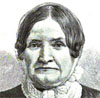
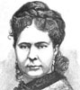
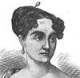

Alison Booth
Parton, James. Noted Women of Europe and America: Authors, Artists, Reformers, and Heroines, Queens, Princesses and Women of Society, Women Eccentric or Peculiar: From the Most Recent and Authentic Sources. Hartford, CT: Phoenix, 1883. Boston: Wilson, 1884.
TOC: Sally Bush (Lincoln's Stepmother); Lydia Maria Child; Miss Prudence Crandall (Quaker Teacher Willing to Help Blacks); Harriet Beecher Stowe; Louisa May Alcott; George Eliot; Princess Louise; Fanny Mendelssohn; Angelica Kaufmann; Baroness Burdett-Coutts; Celia Thaxter; Jane Carlyle; Mrs. Benedict Arnold; Adelaide Procter; Lady Bloomfield; Mother of Victor Hugo; Laura Bridgman; Martha Washington; Madame de Stael; Elizabeth Christine, Wife of Frederick the Great; Empress Eugenie; Caroline Herschel; Phoebe Yates Pember; Maria Mitchell; Mrs. Trollope; Adelaide Phillips; Queen Anne; Queen Mary (as in William &); Mary Somerville; Lady Morgan; Maria Theresa; Lady Franklin; Mme. de Miramion; Rachel; Josephine; Joan of Arc; Queen Elizabeth; Mme. Lafayette; Betty Patterson, or Mme Jerome Bonaparte; Toru Dutt (Christian Poet of India); Peg O'Neal; Mrs. Eaton; Harriet Martineau; Grace Darling. *Pop Chart.
Subjects not in Daughters of Genius : Crandall, Pember. Subjects also in World's Famous : Mme. Jerome Bonaparte, Toru Dutt, Peg O'Neal, Mme. Lafayette, Lady Franklin, Rachel, Joan of Arc, Adelaide Phillips, Maria Mitchell.
-
 Sally Bush
Sally Bush -
Lydia Maria Child
-
 Mrs. Harriet Beecher Stowe
Mrs. Harriet Beecher Stowe -
 Miss Louisa M. Alcott
Miss Louisa M. Alcott -
 Princess Louise
Princess Louise -
 Baroness Burdett-Coutts
Baroness Burdett-Coutts -
 Adelaide Procter
Adelaide Procter -
 Laura Bridgman
Laura Bridgman -
 Madame de Stael
Madame de Stael -
 Wife of Frederick the Great
Wife of Frederick the Great -
 Caroline Herschel
Caroline Herschel -
 Maria Mitchell
Maria Mitchell -
Adelaide Phillips
-
 Mary Somerville
Mary Somerville -
 Maria Theresa
Maria Theresa -
 Rachel
Rachel -
 Queen Elizabeth
Queen Elizabeth -
Betsey Patterson
-
 Toru Dutt and Sister
Toru Dutt and Sister -
 Harriet Martineau
Harriet Martineau -
 Grace Darling
Grace Darling -
 George Sand
George Sand -
 Charlotte Cushman
Charlotte Cushman -
 Charlotte Bronte
Charlotte Bronte
Search OCLC WorldCat for this title.
Search Google Books for this title.